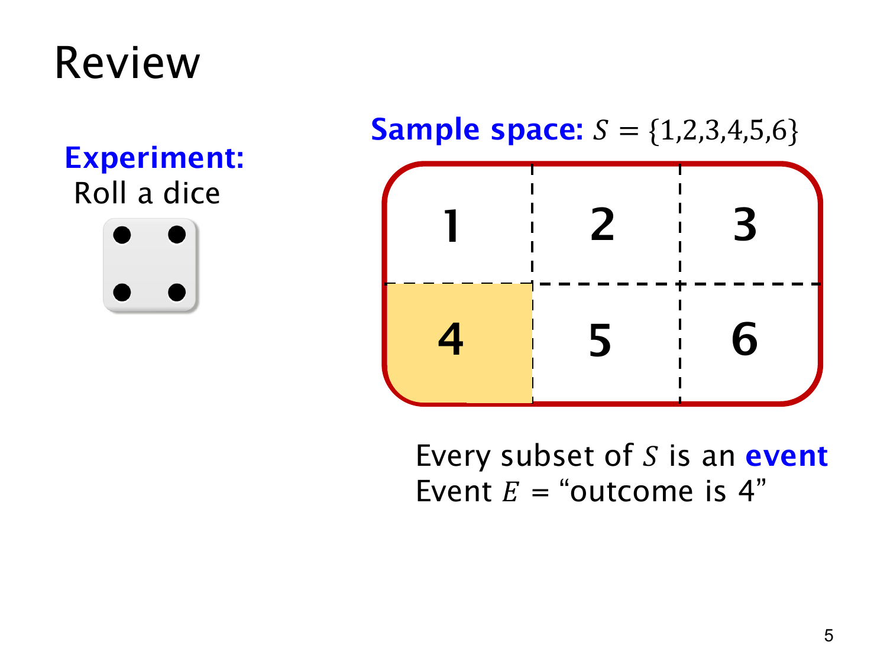

L1.9 · 第 5 页讲解原文
查看这一页课件

六个结果，六十四个事件
黄色部分表示“结果是 4”，即 E={4}。课件的 Every subset of S is an event 指出，有限样本空间 S={1,2,3,4,5,6} 的每个子集都对应一个事件。
- “结果是偶数”：{2,4,6}。
- “结果至少为 5”：{5,6}。
- “结果是 7”：∅。
- “结果在 1 到 6 之间”：S。
若本次结果为 s，s∈E 就表示 E 发生。同一次结果也可以落在几个事件中；掷出 4 时，“结果是 4”和“结果是偶数”都成立。
六个元素能组成 26=64 个子集，所以这次试验有 6 种结果，却有 64 个事件，空事件和必然事件也算在内。
公平骰子给出 p({4})=1/6。换成不公平的骰子，事件集合仍是 {4}，它的概率则由具体模型决定。